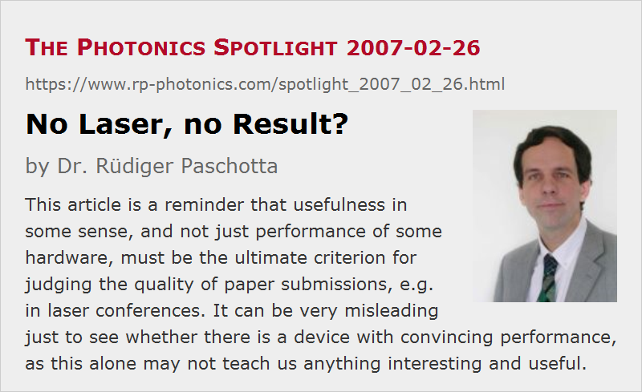

No Laser, no Result?
Posted on 2007-02-26 as a part of the Photonics Spotlight (available as e-mail newsletter!)
Permanent link: https://www.rp-photonics.com/spotlight_2007_02_26.html
Author: Dr. Rüdiger Paschotta, RP Photonics Consulting GmbH
Abstract: This article is a reminder that usefulness in some sense, and not just performance of some hardware, must be the ultimate criterion for judging the quality of paper submissions, e.g. in laser conferences. It can be very misleading just to see whether there is a device with convincing performance, as this alone may not teach us anything interesting and useful.

If you are a laser engineer with the task to finish a device for a customer, you will probably be better off if you deliver a working laser, rather than just some thoughts or excuses. But how about science?
When it comes to judging the quality and relevance of scientific results, e.g. in the form of papers submitted to scientific journals or conferences, some referees react quite negatively to papers which do not present a working laser device (or some other piece of hardware), but rather discuss some thoughts, simulation results, etc. Therefore, such papers often don't rank very high, and may even be rejected.
To some extent, it is understandable that referees find such submissions suspicious. After all, it indeed happens that researchers weren't able to finish their device before some submission deadline and then just try to replace real results with something else, which is easier to get in time but may not be relevant. A typical case is to work with announcements (“We will present latest measurements on this laser, which is expected to generate in excess of 50 W of output power”), or with numerical simulation results as obtained in the planning phase. Particularly in the case of conference submissions, where the programme committee members often receive well over 100 papers to be scored within a week or so, it can be very tempting to immediately dismiss submissions without further reading as soon as one realizes that a concrete device doesn't exist.
Only this approach is in danger of dismissing some really interesting papers, while accepting others which are not worth any attention. Remember, the point of any publication must be that it is useful in some sense, and this has little to do with the question whether there is a concrete laser or not:
- Consider a detailed numerical study of some technologically important phenomenon. If the authors don't manage to present more than some numbers and graphs, which only seem to demonstrate that their model works, it may be completely useless. But they may also have generated some important insight, which might lead e.g. to significant improvements of laser devices if it is recognized by sufficiently many people.
- There are thoughts of more general kind, which can also substantially support the progress of science and technology. I suppose that nobody would seriously suggest that only hardware is relevant for science, while thoughts are useless, but by automatically rejecting papers not presenting concrete hardware, one is effectively doing this.
- On the other hand, I often wonder whether it is really useful to have loads of papers presenting just another laser of type XYZ, with nothing special in its construction, only slightly better performance than seen so far. In too many cases, one learns little more than that group or company ABC is capable of producing devices of type XYZ. This may be of interest itself, but can hardly be considered as a subject of science.
So I would warmly recommend to anyone judging on papers or conference submissions to firmly keep in mind that useful scientific content must be the ultimate criterion, not just hardware and performance. (Ask yourself: 'Do I learn anything interesting here?', rather than only 'Is that performance reasonable?') And if those generating the results would also all consider that, science and technology might advance even faster!
This article is a posting of the Photonics Spotlight, authored by Dr. Rüdiger Paschotta. You may link to this page and cite it, because its location is permanent. See also the RP Photonics Encyclopedia.
Note that you can also receive the articles in the form of a newsletter or with an RSS feed.
Questions and Comments from Users
Here you can submit questions and comments. As far as they get accepted by the author, they will appear above this paragraph together with the author’s answer. The author will decide on acceptance based on certain criteria. Essentially, the issue must be of sufficiently broad interest.
Please do not enter personal data here; we would otherwise delete it soon. (See also our privacy declaration.) If you wish to receive personal feedback or consultancy from the author, please contact him e.g. via e-mail.
By submitting the information, you give your consent to the potential publication of your inputs on our website according to our rules. (If you later retract your consent, we will delete those inputs.) As your inputs are first reviewed by the author, they may be published with some delay.
|  |
If you like this page, please share the link with your friends and colleagues, e.g. via social media:
These sharing buttons are implemented in a privacy-friendly way!